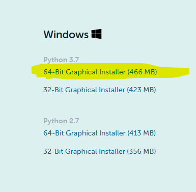
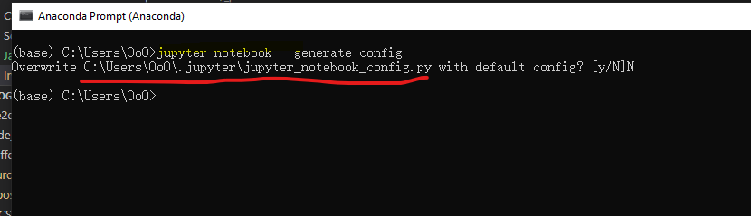
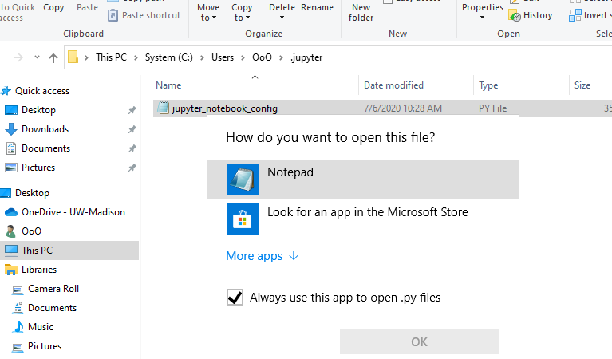
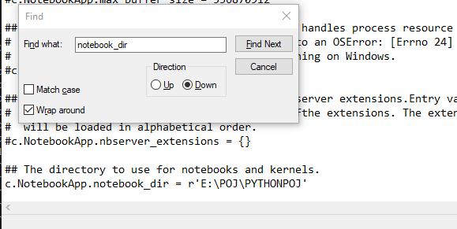
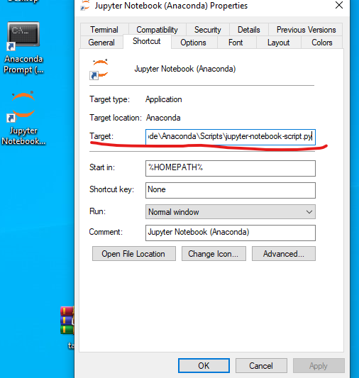

- Anaconda 是最好用的 python 版本管理器。
- Jupyter notebook 是最适合python学习的环境。
- 以上两点不接受反驳。
安装Anaconda
点击下载链接
滚到最下面，点击安装 64bit graphical 版本

下载完成以后安装不需要任何配置，选择好安装路径就好。然后一路next，，，
配置 jupyter notebook
其实安装完就能用，但是因为刚打开的工作目录不是很好用所以需要设置下：
打开刚刚安装的全家桶，找到 Anaconda Prompt， 打开后输入
1 | jupyter notebook --generate-config |
然后会返回一个路径， 如图所示 （因为我试过一次了所以提示不一养，但是返回的路径是对的）

然后打开相应文件，可以用记事本打开

找到 notebook_dir 设置的一行，将注释 “#” 去掉，然后将路径改成你想把文件放的地方

最后将菜单里面的 Jupuyter notebook 的图标拖到桌面上，然后右键打开设置，删除 target 那行.py 后的路径

以后就可以通过桌面图标打开jupyter notebook 了。打开后会弹出一个界面，这个不能关闭。如果不小心浏览器被关了可以通过窗口给的链接打开。
具体使用方法查看 这篇文章
入门材料
强烈推荐下 data-science-note 这个系列，使用很简单，打包下载后解压到你的工作目录下即可。
主要看
- python basic (基本内容)
- numpy (DS 常用的包，基本是一定要学的)
- data-visualization (画图用的)
可以刷下里面的题目，可能有点难emmm，主要是多打代码熟悉语法。